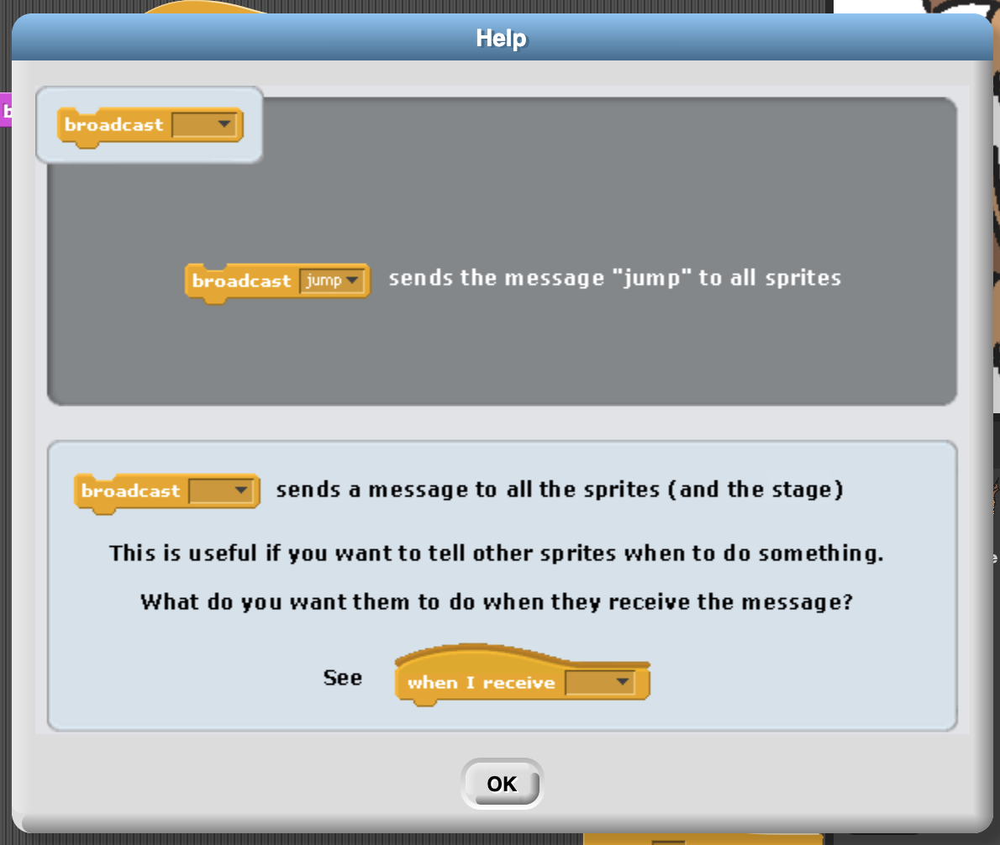

# Lesson 1.4: Animation
Broadcast
- Sends a message to all the sprites and the stage
- Works in conjunction with "When I receive"
-
Simple
example:
I broadcast fly to all sprites. Each sprite that receives fly will start to
fly
- What are real life examples of broacast
- Class Rollcall
- Mom yelling your name
- Traffic Light
- Television
- Where in software have we seen this
- Chatrooms
- Podcasts
- Youtube subscriptions
- Following people on instagram, twitter, etc
-

-
Example